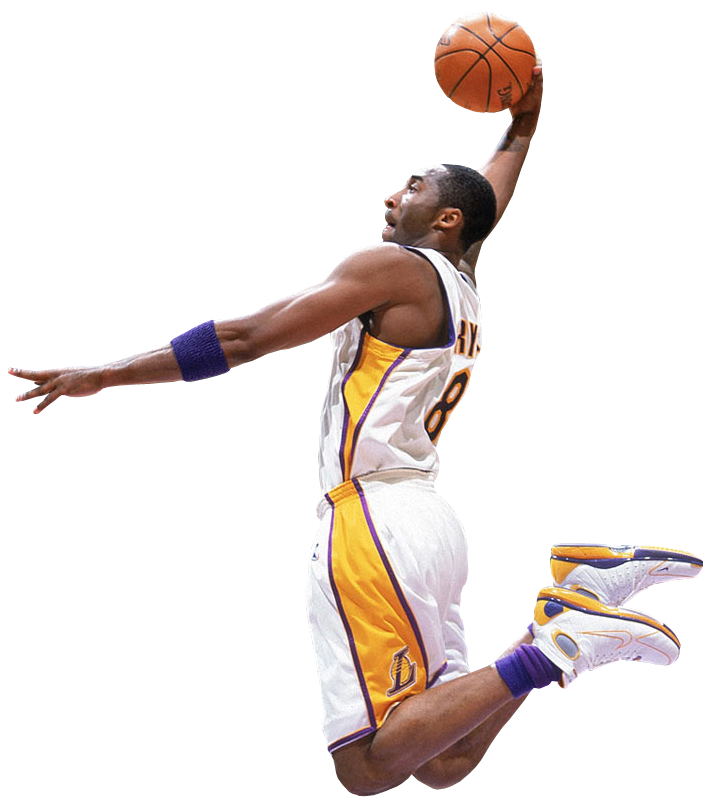
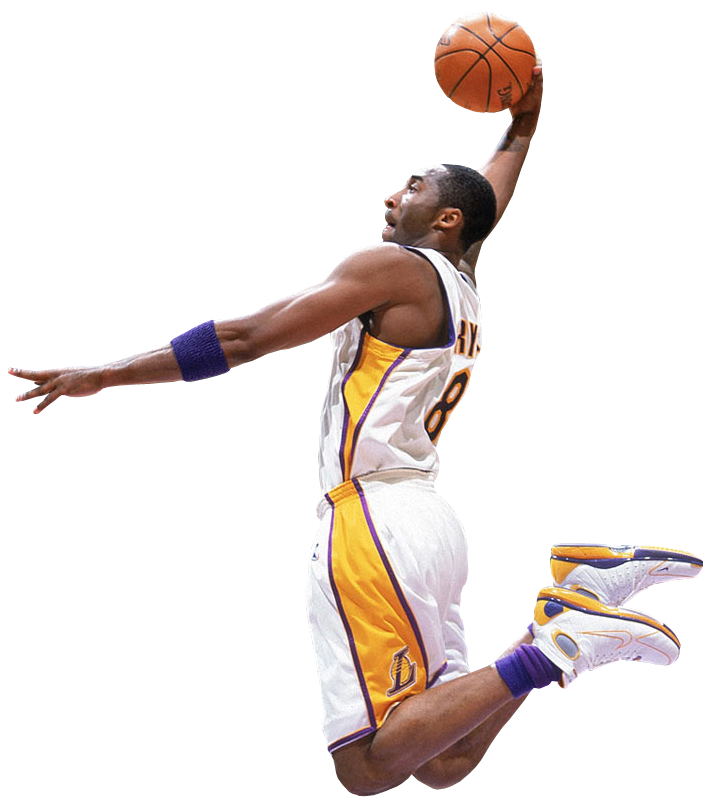

Kobe's Game Log
Below is a scatterplot of every single game that Kobe has ever played in the NBA. Feel free to hover over the scatterplots for a blurb on how successful Kobe was that night. Click on the nodes to see detailed stats from that night. Finally, press the buttons on the right to shift the nodes around.
Display Kobe's career data on:
Game Information


| Kobe Bryant | ||||
|---|---|---|---|---|
| Points | N/A | FG% | N/A | |
| Rebounds | N/A | FT% | N/A | |
| Assists | N/A | 3P% | N/A | |
| Steals | N/A | |||
| Blocks | N/A | |||
| Turnovers | N/A |
Click on the game events in the scatterplot shown to the left to get a detailed look into Kobe's performance from that game
 
